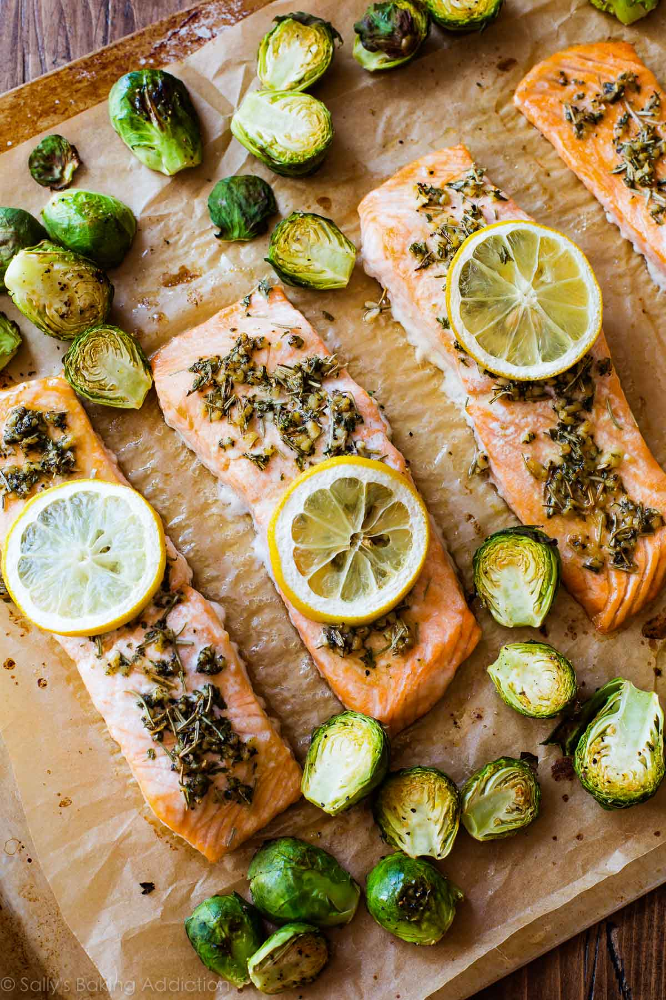

Baked Lemon Herb Salmon

Description
This Baked Lemon Herb Salmon is a healthy and flavorful option for seafood lovers. The zesty lemon and aromatic herbs complement the tender salmon fillet perfectly, making it a scrumptious and easy-to-prepare dish.
Ingredients
- 4 salmon fillets (6 ounces each)
- 2 tablespoons olive oil
- 2 tablespoons lemon juice
- Zest of 1 lemon
- 2 cloves garlic, minced
- 1 teaspoon dried thyme
- 1 teaspoon dried rosemary
- 1 teaspoon dried parsley
- Salt and pepper to taste
- Lemon slices (for garnish)
- Fresh dill or parsley (for garnish)
Directions
- Preheat your oven to 375°F (190°C). Grease a baking dish or line it with parchment paper for easy cleanup.
- In a small bowl, whisk together the olive oil, lemon juice, lemon zest, minced garlic, dried thyme, dried rosemary, dried parsley, salt, and pepper.
- Place the salmon fillets in the prepared baking dish, skin-side down.
- Pour the lemon herb marinade over the salmon, ensuring each fillet is coated evenly.
- Let the salmon marinate for about 15-20 minutes to allow the flavors to meld.
- Bake the salmon in the preheated oven for 15-20 minutes or until the fish flakes easily with a fork.
- Garnish with lemon slices and fresh dill or parsley before serving.
- This Baked Lemon Herb Salmon pairs well with a side of steamed vegetables or a light salad. Enjoy the delightful flavors and healthy goodness!
Back to home
Back to top